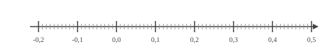
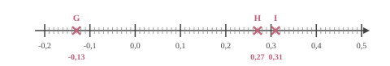

$-13a-3=0$ $-13a-3{\color{blue}\boldsymbol{\,\,+\,\,3}}=0{\color{blue}\boldsymbol{\,\,+\,\,3}}$ $-13a=3$ $-13a{\color{blue}\boldsymbol{\,\div\,(-13)}}=3{\color{blue}\boldsymbol{\,\div\,(-13)}}$ $a=-\dfrac{3}{13}$ La solution de l'équation $-13a-3=0$ est ${\color{#8B3C52}\boldsymbol{-\dfrac{3}{13}}}$.
03
Question
$DBX$ est un triangle quelconque. L'angle $\widehat{DBX}$ mesure $35^\circ$ et l'angle $\widehat{BDX}$ mesure $41^\circ$. Quelle est la mesure de l'angle $\widehat{BXD}$ ?
Dans un triangle, la somme des angles est égale à $180^\circ$. D'où : $\widehat{DBX} + \widehat{BXD} + \widehat{BDX}=180^\circ$. D'où : $\widehat{BXD}=180- \left(\widehat{DBX} + \widehat{BDX}\right)$. D'où : $\widehat{BXD}= 180^\circ-\left(35^\circ+41^\circ\right)=180^\circ-76^\circ=104^\circ$. L'angle ${\color{black}\boldsymbol{\widehat{BXD}}}$ mesure ${\color{#8B3C52}\boldsymbol{104}}^\circ$.
04
Question
Rémi relève les prix des maquettes sur un catalogue par correspondance en fonction de la quantité saisie dans le panier. Il note les prix dans le tableau suivant :
$$\def\arraystretch{1.5}\begin{array}{|c|c|c|c|c|c|}\hline \text{maquettes}&5&6&11&18\\\hline \text{Prix (en €})&49&60&110&180\\\hline\end{array}$$
Le prix des maquettes est-il proportionnel à la quantité achetée ?
On peut calculer le prix unitaire des maquettes dans chaque cas de figure :
$\dfrac{60\text{ \, €}}{6\text{ maquettes}}=\dfrac{110\text{ \, €}}{11\text{ maquettes}}=\dfrac{180\text{ \, €}}{18\text{ maquettes}}=10\text{ \, €}/_{\text{maquette}}$
Mais $\dfrac{49\text{ \, €}}{5\text{ maquettes}}
=9{,}80\text{ \, €}/_{\text{maquette}}$. Le prix des maquettes n'est pas proportionnel à leur nombre.
01
Question
Un article coûtait $250$ € et son prix a augmenté de $20\,\%$. Calculer son nouveau prix.
Une augmentation de $20\,\%$ revient à multiplier par $100\,\% + 20\,\% = 120\,\% = 1{,}2$. $250\times 1{,}2 = 300$ Le nouveau prix de cet article est ${\color{#8B3C52}\boldsymbol{300}}$ €.
02
Question
Placer les points : $G(-0{,}13), H(0{,}27), I(0{,}31)$.


03
Question
Calculer le périmètre exact d'un carré de côté $5{,}4\text{ cm}$
Plusieurs amis reviennent du marché.
Il s'agit de Béatrice, Vanessa et Aude.
Béatrice rapporte $9$ kiwis, $8$ coings, $2$ bananes et $10$ melons.
Vanessa rapporte $6$ bananes, $4$ kiwis, $8$ melons et $1$ coing.
Aude rapporte $7$ kiwis, $8$ coings, $5$ melons et $8$ bananes. a. Compléter le tableau. b. Quel est le nombre total de fruits achetés ? c. Qui a rapporté le plus de fruits ? d. Quel fruit a été rapporté en la plus grande quantité ?
$$
\begin{array}{|c|c|c|c|c|c|}
\hline
\text{Amis\textbackslash fruits} &
\text{Kiwi} &
\text{Banane} &
\text{Coing} &
\text{Melon} &
\text{TOTAL}\\
\hline
\text{Béatrice} & & & & & \\
\hline
\text{Vanessa} & & & & & \\
\hline
\text{Aude} & & & & & \\
\hline
\text{TOTAL} & & & & & \\
\hline
\end{array}
$$
a. Tableau complété :
$$
\begin{array}{|c|c|c|c|c|c|}
\hline
\text{Amis\textbackslash fruits} &
\text{Kiwi} &
\text{Banane} &
\text{Coing} &
\text{Melon} &
\text{TOTAL}\\
\hline
\text{Béatrice} & 9 & 2 & 8 & 10 & 29\\
\hline
\text{Vanessa} & 4 & 6 & 1 & 8 & 19\\
\hline
\text{Aude} & 7 & 8 & 8 & 5 & 28\\
\hline
\text{TOTAL} & 20 & 16 & 17 & 23 & 76\\
\hline
\end{array}
$$
b. Total de fruits : **76**. c. Celle qui a rapporté le plus de fruits : **Béatrice** (29 fruits). d. Fruit le plus rapporté : **le melon** (23 melons).
Teresa doit acheter du gazon. Sur la notice, il est indiqué de prévoir $10$ kg pour $50\text{ m}^2$. Combien doit-elle en acheter pour une surface de $250\text{ m}^2$ ?
Commençons par trouver combien de kg il faut prévoir pour $1\text{ m}^2$.
$1\text{ m}^2$, c'est ${\color{#C5607A}\boldsymbol{50}}$ fois moins que 50$\text{ m}^2$. $10$ kg $\div {\color{#C5607A}\boldsymbol{50}} = 0{,}2$ kg on a donc besoin de ${\color{#C5607A}\boldsymbol{0{,}2}}$ kg pour recouvrir $1\text{ m}^2$. Cherchons maintenant la quantité de kg nécessaire pour recouvrir $250\text{ m}^2$. $250\text{ m}^2$, c'est ${\color{#C5607A}\boldsymbol{250}}$ fois plus que $1\text{ m}^2$. ${\color{#C5607A}\boldsymbol{0{,}2}}$ kg $\times {\color{#C5607A}\boldsymbol{250}} = 50$ kg Teresa aura besoin de ${\color{#8B3C52}\boldsymbol{50}}$ kg pour recouvrir $250\text{ m}^2$.
03
Question
Calculer le volume d'une pyramide de hauteur $5\text{ cm}$ et dont la base est un triangle.
La base du triangle mesure $8\text{ cm}$ et la hauteur associée à cette base mesure $3\text{ cm}$.